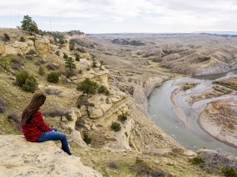
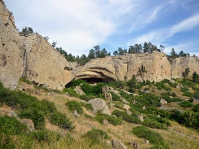
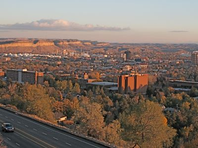
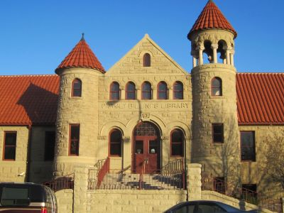
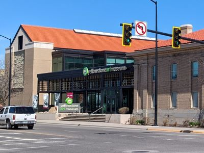
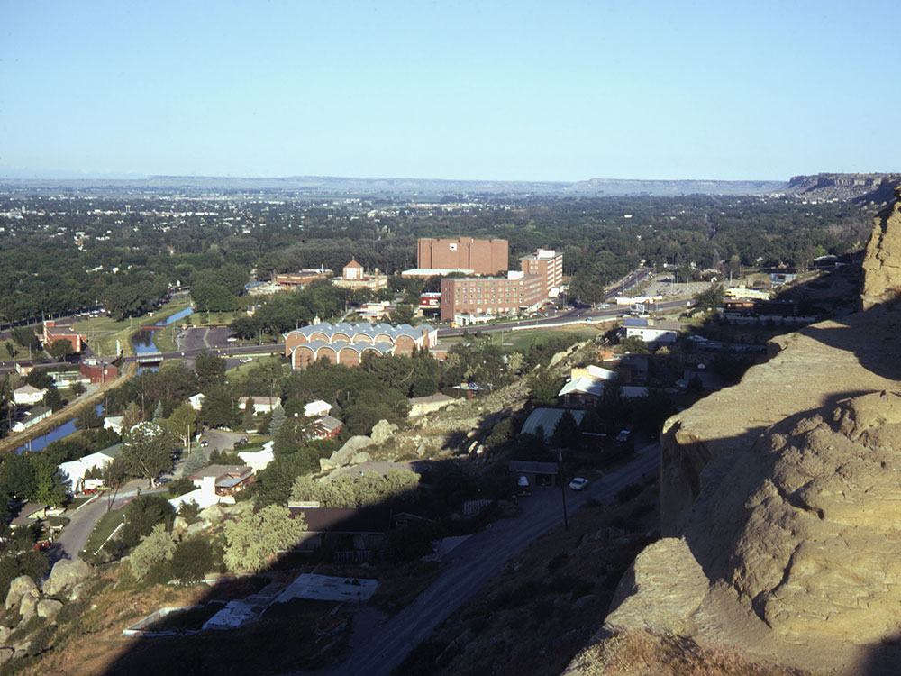
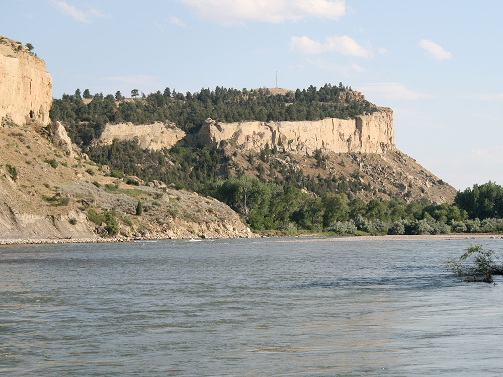
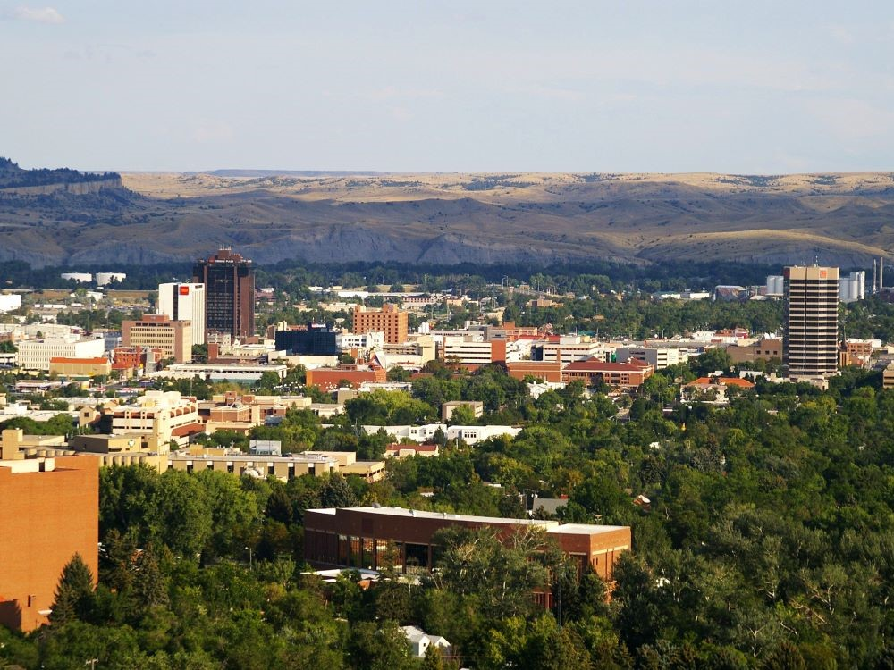
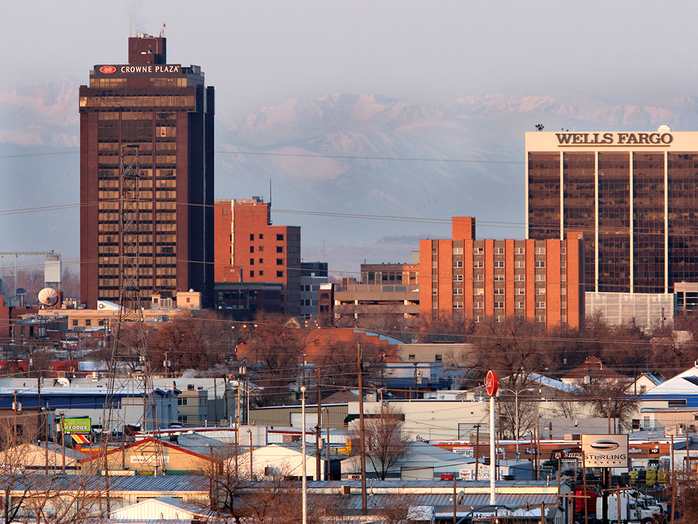

largest city in Montana with more hotel accommodations than any area within a five-state region, the city hosts a variety of conventions, concerts, sporting events, and other rallies
General Information
Overview
Billings is the largest city in Montana, on the Yellowstone River in the south-central part of the state, and it is known as the "Magic City" because it grew so quickly after its founding. Below the sandstone cliffs called the Rimrocks, it is the commercial and medical center of Montana and Wyoming. The city is a gateway to the Beartooth Highway, Yellowstone National Park, and the Little Bighorn Battlefield, and it has a growing arts and craft beer scene.
Visitors come to Billings for the Yellowstone Art Museum, ZooMontana, and the Western Heritage Center. They also come for Pictograph Cave State Park, for Pompeys Pillar National Monument, and for easy access to the Beartooth Mountains and Little Bighorn Battlefield.
History
The Crow (Apsáalooke) people lived along the Yellowstone River, and in 1806 William Clark carved his name on a sandstone pillar east of town on the way back from the Pacific. The Northern Pacific Railway founded Billings in 1882, naming it for Frederick Billings, the company's president, and it grew almost overnight into a major livestock and agricultural center. The discovery of oil in the region in the 1940s and 1950s added to the economy, and the city now has refineries and a large healthcare industry. The Crow Reservation and the Northern Cheyenne Reservation are nearby.
Sightseeing and Popular Landmarks
The Rimrocks, a rugged line of cliffs about 500 feet high, encircle the city on the north, and Sacrifice Cliff and the Boothill Cemetery on the rim have views of the valley. The Yellowstone Kelly Interpretive Site and Zimmerman Park have panoramic views, and Pictograph Cave State Park has rock art that is thousands of years old. The Moss Mansion, the Depot, and the Pompeys Pillar National Monument, about 25 miles east, are historic sites.
Culture and Museums
The Yellowstone Art Museum has a collection of Montana and Western art, and the Western Heritage Center has exhibits on the region's history and Native cultures. The Yellowstone County Museum is in a log cabin near the airport, and the Alberta Bair Theater hosts concerts and Broadway shows. MetraPark hosts rodeos and the Montana Fair each August.
Parks
ZooMontana has animals native to the northern climate, and Four Dances Natural Area has trails on the bluffs above the Yellowstone River. The Billings Heights has Riverfront Park, and the Beartooth Highway, one of the most scenic drives in the country, leads from Red Lodge to Yellowstone. Little Bighorn Battlefield National Monument is about an hour southeast.
Seasons and Weather
Billings has a semi-arid continental climate. Summers are hot and dry, with highs in the 80s and 90s°F, and winters are cold, with highs in the 30s°F and about 50 inches of snow, but chinook winds can bring sudden warm spells. Spring and fall are changeable.
This article uses material from Wikipedia as well as information from official tourism and institutional sources. Key references include Visit Billings, Yellowstone Art Museum, ZooMontana, Montana Office of Tourism, and National Weather Service Billings. Wikipedia material is from the article "Billings, Montana", and is available under the Creative Commons Attribution-Share-Alike License 3.0.
Featured Locations

Jeff P from Berkeley, CA, USA, CC BY 2.0, via Wikimedia Commons; Image Size Adjusted
.jpg){kind=link}
Four Dances Recreation Area
Natural plateau preserve featuring hiking trails, river overlooks, and native grassland ecosystems with cultural and ecological significance.

Jeff P from Berkeley, CA, USA, CC BY 2.0, via Wikimedia Commons; Image Size Adjusted
Pictograph Cave State Park
Archaeological site featuring prehistoric rock art, interpretive trails, and a visitor center with exhibits on ancient human habitation.

Jeff P from Berkeley, CA, USA, CC BY 2.0, via Wikimedia Commons; Image Size Adjusted
Rimrocks
Expansive sandstone cliffs offering panoramic views, paved trails, and access to historic and recreational landmarks above the cityscape.

Jeff P from Berkeley, CA, USA, CC BY 2.0, via Wikimedia Commons; Image Size Adjusted
Western Heritage Center
Regional museum housed in a historic library building featuring exhibits, archives, and programs that explore the cultural heritage of the Yellowstone River Valley.

Jeff P from Berkeley, CA, USA, CC BY 2.0, via Wikimedia Commons; Image Size Adjusted
Yellowstone Art Museum
Contemporary and historic art museum showcasing regional and national works with rotating exhibitions, educational programs, and community events.

Lambchop22, CC BY-SA 3.0, via Wikimedia Commons; Image Size Adjusted
Yellowstone County Museum
Historic log cabin museum preserving Native American artifacts, pioneer memorabilia, and regional history through immersive exhibits and educational programs.
Lambchop22, CC BY-SA 3.0, via Wikimedia Commons; Image Size Adjusted
Yellowstone Kelly Interpretive Site
Scenic overlook and memorial site honoring a legendary frontier scout and military veteran with interpretive signage and panoramic views.
Lambchop22, CC BY-SA 3.0, via Wikimedia Commons; Image Size Adjusted
Zimmerman Park
Natural bluffside park with rugged trails, panoramic city views, and access to the iconic Rimrocks for hiking and biking.
Lambchop22, CC BY-SA 3.0, via Wikimedia Commons; Image Size Adjusted
ZooMontana
Sprawling wildlife park featuring native and exotic animals, botanical gardens, and educational exhibits across a naturalistic 70-acre setting.



